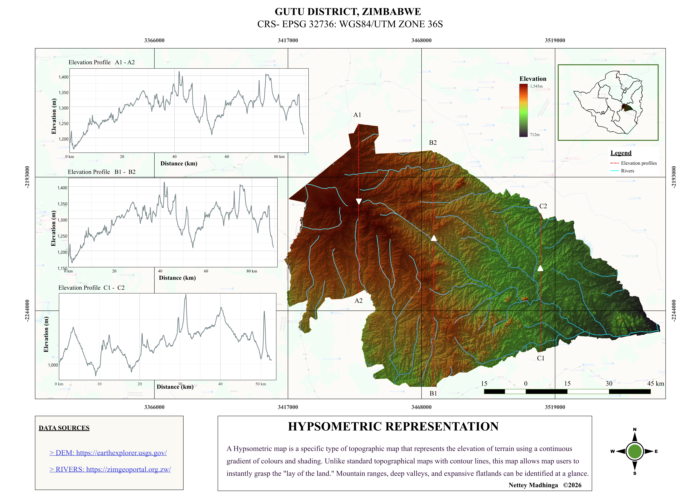

← Back to all projects
TOPOGRAPHIC & TERRAIN MODELING · EPSG:32736
Gutu District Hypsometric Terrain & Elevation Profile Analysis
Continuous relief modeling (733 m – 1,563 m) and multi-transect cross-sectional profiling (A1–A2, B1–B2, C1–C2) across Gutu District, Masvingo Province, Zimbabwe.
